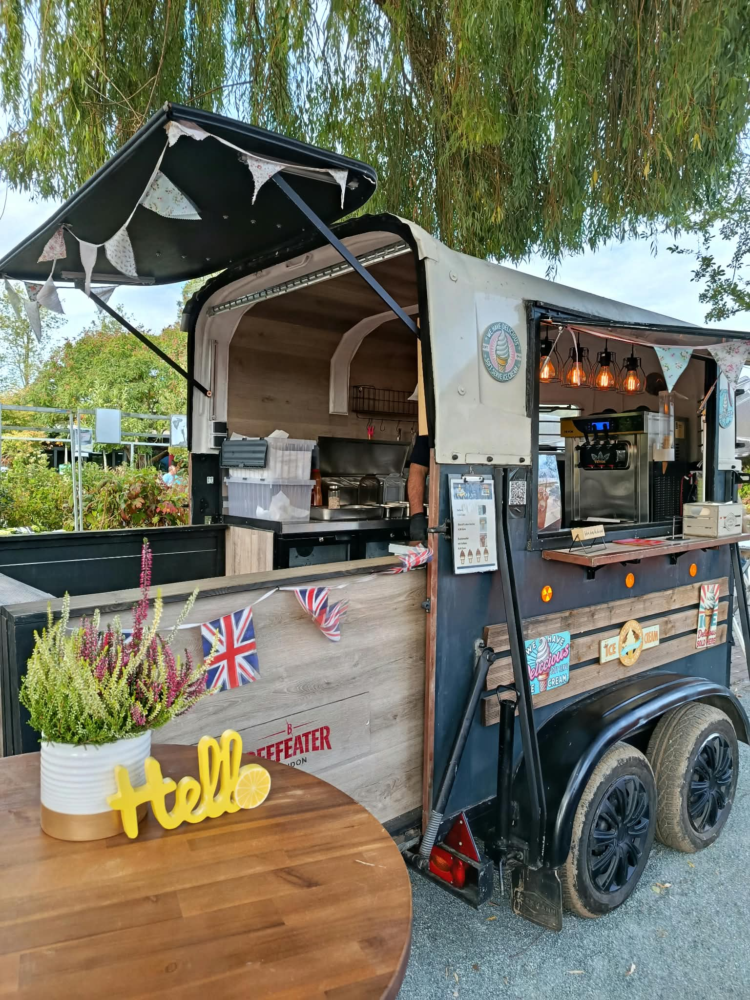

Softeis & Bubblewaffeln
Softeis mit verschiedenen Toppings oder Bubblewaffeln. Für alle, die beim Nachtisch nicht bis zum Schluss warten möchten.

Ein bisschen England. Mitten auf eurem Fest.
Softeis, Bubblewaffeln oder etwas Herzhaftes: Wir kommen mit unserem Foodtrailer zu eurem Markt, Stadtfest oder Firmenaktionstag.
Lasst uns euer Fest planenWas darf’s sein?
Wir stimmen das Angebot mit euch ab – passend zum Anlass und euren Gästen. Diese Auswahl ist möglich:
Lieber selbst loslegen? Einzelne Geräte könnt ihr auch separat mieten. Schreibt uns, was ihr vorhabt.
Ein Blick bei uns vorbei
Noch mehr vom Trailer? Schaut auf Instagram vorbei.
@rinkfoodtrailerDirekt zu Stefan
Ob Markt, Gartenschau, Vereinsfest oder Firmenaktion: Erzählt uns kurz von eurer Veranstaltung. Dann besprechen wir das Angebot und die Details vor Ort.
Schickt uns Datum, Ort und Anlass – und, wenn ihr schon eine Idee habt, euer Wunschangebot.
stefan@foodtrailer-rink.de Wir freuen uns auf eure Nachricht.Folgt uns auf Instagram

{kind=link}